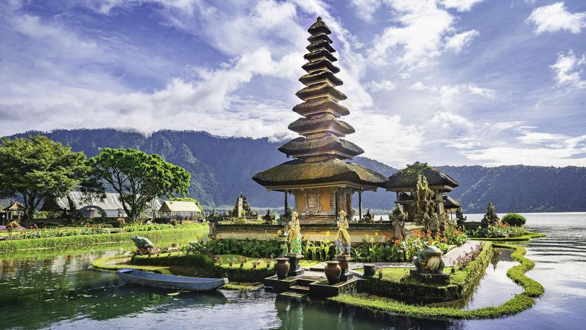

Sejarah

Bali memiliki sejarah yang panjang dan kaya, mulai dari masa
prasejarah hingga masa kolonial. Pada abad ke-9, Bali telah menjadi
pusat kebudayaan Hindu-Buddha di Indonesia. Pada abad ke-14,
kerajaan Majapahit mulai mempengaruhi Bali, dan agama Hindu menjadi
agama utama yang dianut oleh masyarakat Bali hingga sekarang.
Setelah jatuhnya kerajaan Majapahit, Bali tetap mempertahankan
kebudayaan dan agama Hindu dengan sedikit pengaruh dari luar.
Kolonial Belanda mulai memasuki Bali pada abad ke-19, dan pada tahun
1906, Belanda berhasil menguasai seluruh wilayah Bali. Bali kemudian
menjadi bagian dari Republik Indonesia setelah kemerdekaan pada
tahun 1945.
Geografis
Bali terletak di antara Pulau Jawa dan Pulau Lombok, dan memiliki
luas wilayah sekitar 5.780 km². Pulau ini dikelilingi oleh lautan
dan memiliki berbagai jenis lanskap, mulai dari pantai pasir putih
hingga pegunungan yang hijau. Gunung Agung adalah gunung tertinggi
di Bali dengan ketinggian 3.031 meter di atas permukaan laut.
Bali memiliki iklim tropis dengan dua musim utama, yaitu musim hujan
dan musim kemarau. Musim hujan berlangsung dari bulan November
hingga Maret, sedangkan musim kemarau berlangsung dari bulan April
hingga Oktober. Iklim yang hangat dan pemandangan alam yang indah
membuat Bali menjadi tujuan wisata yang populer sepanjang tahun.
Wisata
Bali terkenal sebagai destinasi wisata internasional dengan berbagai
objek wisata yang menarik. Selain keindahan alamnya, Bali juga
menawarkan berbagai kegiatan budaya dan rekreasi yang dapat
dinikmati oleh wisatawan dari berbagai kalangan.
Ubud
Ubud adalah pusat seni dan budaya Bali yang terkenal dengan
pemandangan sawah yang hijau, galeri seni, dan pertunjukan tari
tradisional. Wisatawan dapat mengunjungi Monkey Forest, Museum
Puri Lukisan, dan Pasar Seni Ubud untuk menikmati keindahan seni
dan budaya Bali.
Kuta

Kuta adalah salah satu pantai terkenal di Bali yang menawarkan
pemandangan matahari terbenam yang spektakuler. Kuta juga dikenal
dengan kehidupan malamnya yang ramai, berbagai restoran, bar, dan
toko-toko yang menjual berbagai macam barang. Pantai Kuta adalah
tempat yang sempurna untuk berselancar, berjemur, atau sekadar
bersantai.